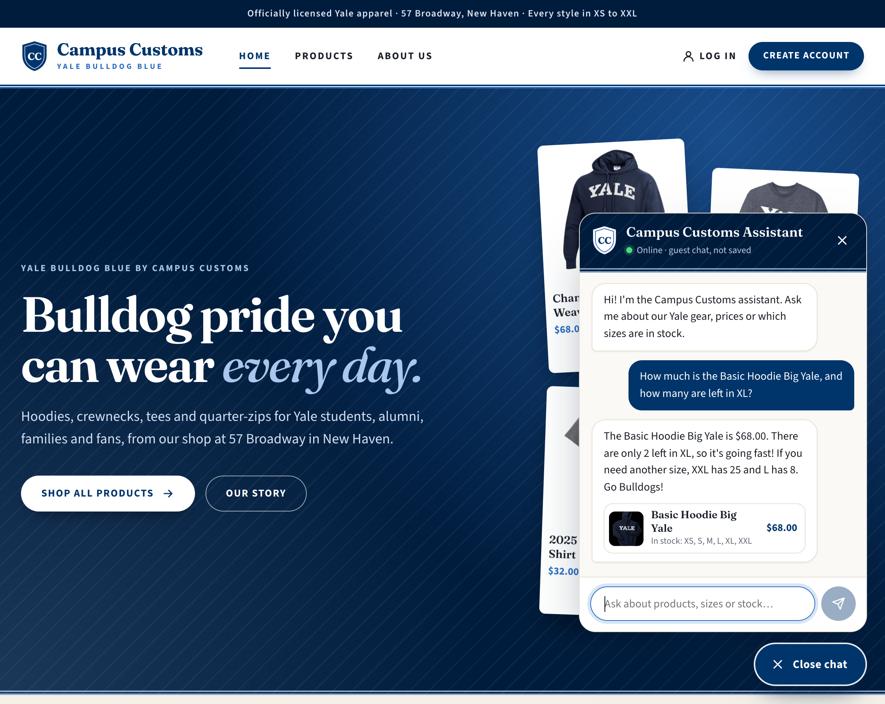
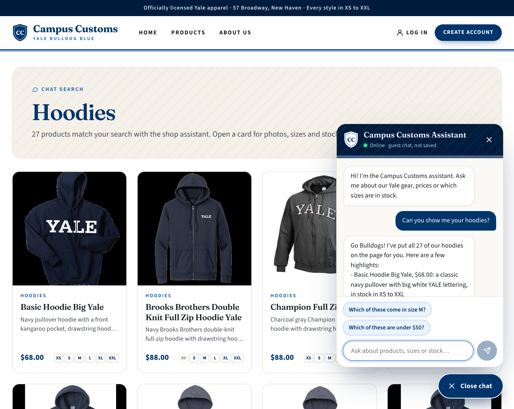
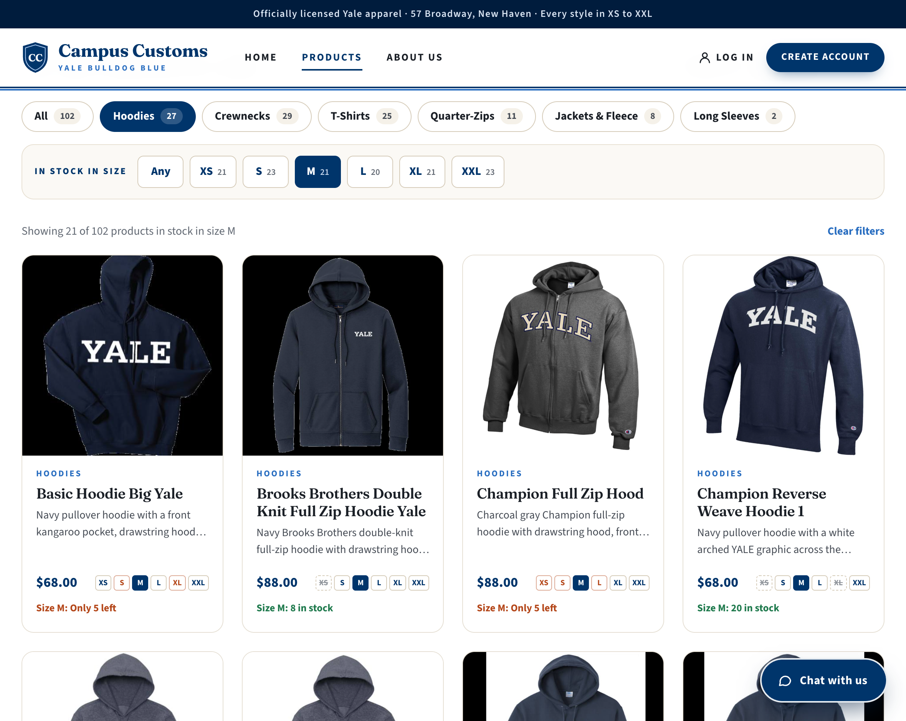

| # | Check | What was compared | Result |
|---|---|---|---|
| 1 | Chat answers a stock and price question | Basic Hoodie Big Yale: $68.00, 2 left in XL (plus L 8, XXL 25) | Pass |
| 2 | Asking for hoodies puts product cards on the page | 27 hoodie cards on the results page; 27 hoodies in the database | Pass |
| 3 | Problem 9 improvement: shop by size | 21 hoodies with M in stock, with each card's M quantity | Pass |
1. Chat answers a stock and price question
In the live chat, the shopper asked how much the Basic Hoodie Big Yale is and how many are left in XL. The assistant answered $68.00 with only 2 left in XL (and 25 in XXL, 8 in L), exactly the price and quantities stored in the database.

Database check
SELECT c.name, c.price, i.size, i.quantity
FROM catalogue c JOIN inventory i ON i.product_id = c.product_id
WHERE c.product_id = 'basic-hoodie-big-yale' AND i.size IN ('L', 'XL', 'XXL');| name | price | size | quantity |
|---|---|---|---|
| Basic Hoodie Big Yale | 68.0 | XL | 2 |
| Basic Hoodie Big Yale | 68.0 | L | 8 |
| Basic Hoodie Big Yale | 68.0 | XXL | 25 |
Backend log for this answer: check_size_stock {"product": "Basic Hoodie Big Yale", "size": "XL"},
then the reply. The agent looked the stock up rather than guessing.
2. Asking for hoodies puts matching product cards on the page
After “Can you show me your hoodies?”, the assistant searched the Hoodies category and the main page switched to a results page with 27 hoodie cards, each with its photo, name, description, price and sizes. That is the same number of hoodies the database holds.

/search?q=&category=Hoodies).
Open full size
Database check
SELECT COUNT(*) FROM catalogue WHERE lower(garment_type) LIKE '%hood%'; -- 27
The shop's Hoodies category is every product whose garment type contains “hood”. Backend log for this
answer: search_products {"query": "", "category": "Hoodies"}, then the reply.
3. Problem 9 improvement: shop by size
With Hoodies and the “In stock in size” filter set to M, the Products page lists only the 21 hoodies that have M in stock, and each card fills in its M box and shows its exact M stock. Both the count and the quantities in the first row (5, 8, 5 and 20) match the database.

/products?category=Hoodies&size=M).
Open full size
Database check
SELECT COUNT(*) FROM catalogue c JOIN inventory i ON i.product_id = c.product_id
WHERE lower(c.garment_type) LIKE '%hood%' AND i.size = 'M' AND i.quantity > 0; -- 21| First row of cards | M in the database | Card says |
|---|---|---|
| Basic Hoodie Big Yale | 5 | Only 5 left |
| Brooks Brothers Double Knit Full Zip Hoodie Yale | 8 | 8 in stock |
| Champion Full Zip Hood | 5 | Only 5 left |
| Champion Reverse Weave Hoodie 1 | 20 | 20 in stock |